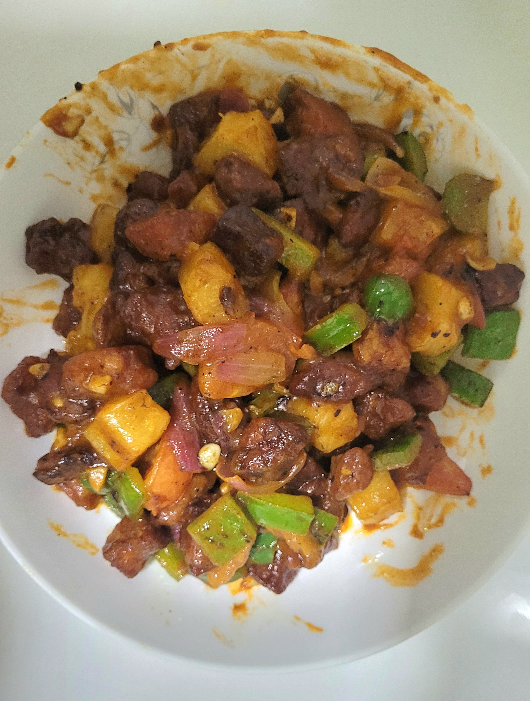

Sweet and Sour Pork (Gu Lu Rou)

Description
Sweet and Sour Pork is a popular Caifan dish that is almost everybody's favourite!
Ingredients
Serving size: 4 people
Stir-fry
- 2 cloves garlic, chopped
- 1 big onion, petals
- 300g pork tenderloin, cubed
- 1 red/green capsicum, sliced
- 1 tomato, cut into wedges
- 100g canned pineapple, cubed
Deep fry
Marinade (velvet)
- 1/2 tsp salt
- 1 tbsp light soy sauce
- 1 tsp corn flour
- 1/2 tsp sesame oil
- 1 egg
- 1 tbsp shaoxing wine
Sweet & sour sauce
- 3 tbsp tomato sauce/ketchup
- 1 tsp white/brown sugar
- 1 tsp salt
- 1 tsp worcestershire sauce
- 1 tsp white vinegar
- 1 tsp corn flour
- 100ml water
Instructions
- Marinade sliced pork and set aside for 30 minutes
- Mix sweet & sour sauce ingredients well and set aside
- Prepare aromatics & vegetables
- Coat pork with cornstarch. Double fry and dish out
- Stir fry aromatics & vegetables
- Add pork and then sauce. Mix well and serve hot